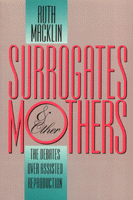

An ethicist traces an infertile couple's journey through the moral and legal maze of reproductive alternatives
An ethicist traces an infertile couple's journey through the moral and legal maze of reproductive alternatives


 An ethicist traces an infertile couple's journey through the moral and legal maze of reproductive alternatives
An ethicist traces an infertile couple's journey through the moral and legal maze of reproductive alternatives

|  |
Surrogates and Other MothersThe Debates over Assisted ReproductionRuth Macklinpaper EAN: 978-1-56639-180-1 (ISBN: 1-56639-180-6) |
"There is no one more qualified to help us.... The story [Macklin] constructs...is poignant, moving, and illustrative of precisely the kinds of challenges, options, and limits those who avail themselves of the latest breakthroughs in the treatment of infertility face."
—Arthur L. Caplan
Developments in new reproductive technologies have confounded public policy and created legal and ethical quandaries for professionals and ordinary citizens alike. Drawing from the most current medical, psychiatric, legal, and bioethical literature, Ruth Macklin, noted author and philosopher, presents the arguments surrounding these advances through the voices of fictional characters. The episodes she narrates are based on real-life situations, both from her personal experience as a hospital ethicist and from the public arena, where such controversial court cases as that of Baby M have sparked a multitude of disparate opinions on surrogacy, in vitro fertilization, and egg and sperm donor program.
Macklin's hypoethical tale centers on Bonnie and Larry, an infertile couple longing for a child. As the couple's quest to become parents begins, they discover that Bonnie is physically incapable of carrying a pregnancy to term. Desperate to explore their options, Bonnie and Larry attempt adoption but are rejected by the agency without explanation. Finally, they contemplate surrogacy as their last chance to have a child. Seeking advice and answers, they consult health professionals, lawyers, pastoral counselors, and a bioethicist. In the course of this complicated and often painful decision-making process, they attend meetings of a government task force on reproduction where they hear both radical and liberal feminist positions.
Their experiences with friends, family members, two surrogates, hospital ethics committees, and special interest groups underscore the difficulty of coming to a consensus on such issues as AIDS, the right to privacy, premenstrual syndrome, the violation of surrogate contracts, and the responsibilities of therapists and physicians to their patients and to the community at large.
Excerpt available at www.temple.edu/tempress
"The story she conducts about the struggle of 'Bonnie and Larry Roberts' to have a child is poignant, moving, and illustrative of precisely the kinds of challenges, options, and limits those who avail themselves of the latest breakthroughs in the treatment of infertility face. Not only will the Roberts's story ring true to anyone who has spent any time seeking to bring a child into their family via adoption or surrogacy, but it also highlights the heretofore relatively unexamined questions of the responsibilities and duties of the doctors, therapists, counselors, agencies, interest groups, and regulators who are involved in the treatment of infertility. Anyone who seeks to better understand the meaning of 'parent,' 'child,' or 'family' will benefit from reading this important work."
—Arthur L. Caplan, Professor of Bioethics and Director, Center for Bioethics, University of Pennsylvania
"Ruth Macklin has a unique ability to tackle the complex ethical and legal challenges raised by the new reproductive technologies with originality and style. By using the narrative, she captures our imaginations, our hearts, and our minds, and enables us to understand the inter connections among such diverse issues as AIDS, the right to privacy, controlling pregnant women, surrogacy, and assisted reproduction."
—Karen H. Rothenberg, Professor of Law and Director, Law and Health Care Program, University of Maryland
Acknowledgments
Introduction
1. Confronting Infertility
2. Debating Assisted Reproduction
3. Conflicting Views about Surrogacy
4. Counseling HIV-Infected Women
5. Dealing with Medical Labels
6. Controlling Psychiatric Patients
7. Abusing and Refusing while Pregnant
8. Grappling with Patients' Rights
9. Devising Ethical Policies
10. Reaching Closure
Notes
Credits
Index
 | Ruth Macklin is Professor of Bioethics at Albert Einstein College of Medicine and the author of eight books, including the highly praised Mortal Choices: Bioethics in Today's World and Enemies of Patients: How Doctors Are Losing Their Power and Patients Are Losing Their Rights. A consultant to and board member of several national and international organizations, including the National Institute of Health, the National Research Council, and the World Health Organization, she has directed her educational and writing efforts to issues of urban health, health policy and law, reproductive technologies, and biomedical research and ethics. |
Health and Health Policy
Philosophy and Ethics
© 2015 Temple University. All Rights Reserved. This page: http://www.temple.edu/tempress/titles/1073_reg.html.